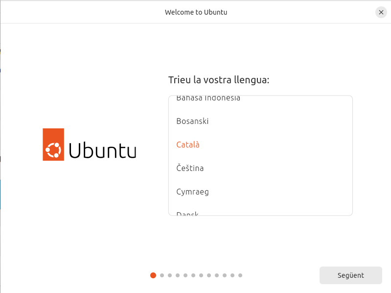

Instal·lació, configuració inicial i programari de base
Per a la documentació completa visita mkdocs.org.
Introducció
En aquest treball explico com he instal·lat Windows 10 en una màquina virtual. He creat una partició de 20 GB en un disc de 40 GB, deixant els altres 20 GB per instal·lar Ubuntu 24 més endavant. Després, he restaurat el sistema d'arrencada per gestionar els dos sistemes operatius.
A més, també he instal·lat Windows Server 2022 per ampliar els coneixements sobre diferents entorns de treball. Durant el procés, he revisat opcions de llicència i configurat els elements bàsics perquè tot funcioni correctament.
He anat apuntant tot el procés amb captures de pantalla i anotacions per tenir-ho tot ben documentat.

Preparació màquines
Instal·lació Windows 10 Enterprise
-
El primer que haurem de fer és crear la màquina al virtualbox, afegir la ISO, l'espai de disc de 40GB, etc. Una vegada encenem la maquina, afegirem l'idioma, distribució de teclat, acceptarem el termes de llicencia, i escollirem una instal·lació personalitzada per a només instal·lar el windows.


-
Tot seguit, al disc de 40GB li crearem una partició de 20GB. Aquesta l'utilitzarem més endavant, per fer una sèrie de activitats.


-
Seguidament confinuarem amb la instal·lació.


-
Ara crearem un usuari local clicant a 'Unirse a un dominio', seguidament afegirem el nom i la contrasenya, a més de les preguntes de seguretat.


-
Seguidament clicarem les opcions que ens interesen més a nivell personal, aquest no és un pas important de la instal·lació.


-
Una vegada ja ha acabat la instal·lació, revisarem que les particions s'han fet correctament amb l'administrador de discs.

Instal·lació Windows Server 2022
La instal·lació en Windows Server 2022 és molt similar a la de Windows 10, per tant si heu fet l'apartat anterior sabreu fer aquest sense cap problema.
-
El primer que farem és crear la vm al virtualbox, després afegirem la ISO i la mida del disc serà de 50GB. Després una vegada encesa la màquina començarem amb la instal·lació.

-
En aquest apartat de la instal·lació escollirem l'última opció, ja que volem tindre interfície gràfica.

-
Els següents passos són clicar 'Siguiente'.


-
Per últim, ja tindrem el sistema operatiu.
Xarxa bàsica
-
Al ser un windows server el que farem és configurar-li una ip estàtica, per fer això haurem d'anar a "Configuració", "Xarxa", "Adaptadors de xarxa" i farem clic dret per escollir l'opció "Propietats".

-
Després, clicarem a sobre de IPv4.
-
Aquí afegirem l'ip que més ens sigui convenient.

Recuperar gestor d'arrencada de Windows 10
Instal·lació d'Ubuntu en la vm Windows 10
-
El primer que haurem de fer és entrar dins del windows i comprovar a partir de l'administrador de discs que realment hi ha un espai al disc dur disponible per Ubuntu.

-
Seguidament apagarem la màquina virtual, afegirem la iso de Ubuntu 24 i tornarem a iniciar-la.

-
En aquest següent punt realitzarem tota la configuració de forma normal, però quan arribessem a l'apartat d'on instal·lar el SO clicarem en l'opció "Install Ubuntu alongside Windows 10", així podrem tindre els dos sistemes operatius a la vegada.



-
Seguidament una vegada acaba la instal·lació, reinciarem la vm, clicarem Enter per treure la iso i comprovarem que Ubuntu funciona. Com hem pogut observar no apareix un grub per triar el sistema operatiu, això és perque el sistema d'arrencada de windows està danyat.


Recuperació amb ISO Windows
-
Seguidament tancarem la màquina i afegirem la iso de Windows 10, aquesta la utilitzarem per reparar el gestor d'arrencada. Per carregar la iso haurem de clicar qualsevol tecla.
-
Després, escollirem l'idioma.

-
Aquí haurem de anar a la part d'abaix a l'esquerra i clicar "Reparar el equipo".
-
A continuació, clicarem en "Solucionar problemas" i "Símbolo del sistema".


-
Seguidament, llistarem els discs, després seleccionarem el disc 0, llistarem les particions i escollirem la primera ja que és on està el gestor d'arrencada. Aquesta partició la configurarem com a "active" i després sortirem, per configurar el disc. Introduirem una serie de comandes que repararan el MBR, la seqüència d'inici BOOT i reconstruirà la base de dades d'arrencada BCD.

-
El següent que haurem de fer és afegir la iso de gparted per a eliminar la partició d'Ubuntu.

-
Seguidament, una vegada encesa la màquina configurarem l'idioma.

-
Després seleccionarem la partició d'ubuntu i l'eliminarem.

-
El següent que haurem de fer és guardar el canvis.


Instal·lar programari
-
El primer que haurem de fer és anar a la pàgina oficial de Google i descarregar l’executable de Chrome.

-
Una vegada descarregat i instal·lat iniciarem sessió o crearem un compte per començar a utilitzar-lo.
-
Seguidament, descarregarem Drive en local per a ordinadors des de la página oficial.

-
Després començarem amb la instal·lació.
-
A continuació, quan acabi el programa de instal·lar-se clicarem en “Lanzar” per obrir-lo.
-
Quan estem dins començarem a configurar algunes opcions i iniciarem sessió.

Punts de restauració
-
Obrim el menú Inici i escrivim restauració al quadre de cerca.
-
Seleccionem l’opció "Crear un punt de restauració" dels resultats que apareixen.
-
A la finestra que s’obre, anem a la pestanya "Protecció del sistema" i fem clic al botó "Crear..." que hi ha a la part inferior de la finestra.
-
Escrivim un nom per identificar el punt de restauració.

-
Fem clic a "Crear" per iniciar la creació del punt. El procés pot durar uns minuts.

-
Quan ens aparegui el missatge que indica que s’ha creat correctament, fem clic a "Tancar".
-
El primer que haurem de fer és anar a la pàgina oficial i descarregar l’executable de winrar.

-
Una vegada descarregat, l'instal·larem.


-
Després afegirem una carpeta amb un quants fitxers, per després demostrar que les resturacions no afecten als arxius.

-
Seguidament clicarem en "Restaurar sistema...", escollirem la restauració que hem creat abans i esperarem.


-
Quan acabi la restauració ens sortira un missatge de que s'ha fet correctament i veurem que el winrar ja no esta instal·lat. A més de que els arxius continuen estan.